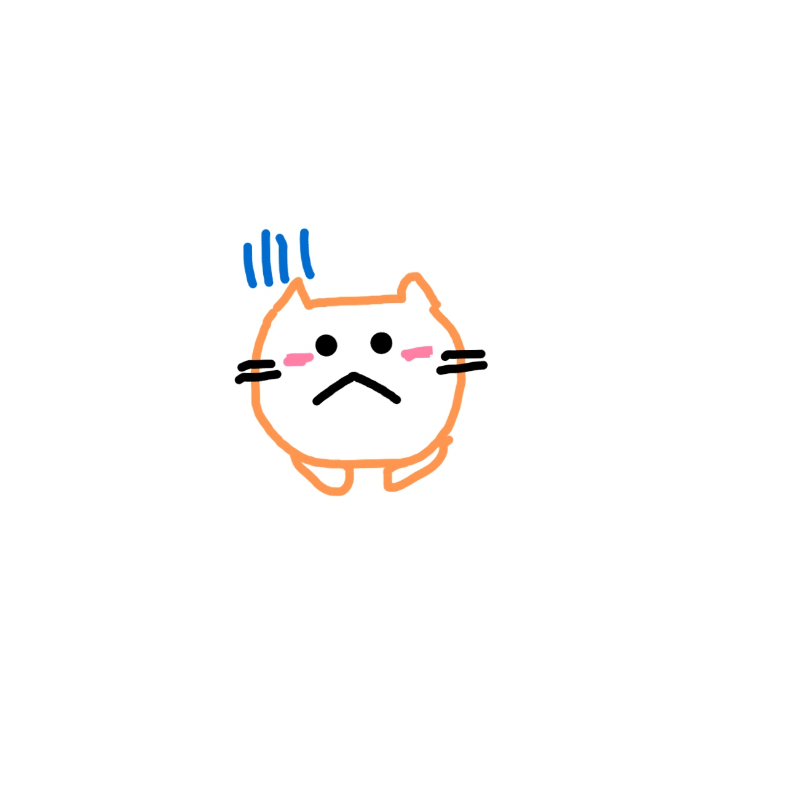

raspberrypi4 アイデアの迷走

✳︎猫っぽくする意味とは？
完全にアイデアが迷走してしまい、
自分がどんなモノを作りたかったのかを見失ってしまった。
そこで、
とりあえず原点に戻り、猫の好きなところについて
友人にも協力してもらいながら
リストアップしてみた。
①友人A
・顔
→猫と直接的に関わる機会は少ないが、
もうただ単に顔が好き！！
②友人B
・癒される
→存在事態がもう癒し。
かわいい！！
③友人C
・世話が楽
→犬と違って手間がかからないから良い！
④友人D
・自由に感情を表現するところ
・すり寄ってくるところ
・気ままなところ
とこんな感じであった。
ちなみに自分は
・気分屋なところ
・ツンデレなところ
が好きである。
✳︎猫の特性
友人や自分の猫の好きなところの共通点から
猫の特性は
猫のマイペースな性格から
適度な距離感を保って接することができる動物
といえよう。
つまり、
猫は
依存感はないが
一緒に過ごすことで”愛”を確かめられ
そうでないときは
自分の時間を楽しむことができる
という点が魅力的であるのだ。
また、猫は基本的に躾をすることができない。
よって、猫は怒っても無駄なことが多い。
したがって、飼い主は”どうしたらやめてくれるのか”ということを考える必要がある。
そのため、
他人を変えるのではなく、自分を変える
という概念が生まれやすくなる。
そしてこれは
自己啓発につながる ！
✳︎求めるもの
→”依存”ではなく”共存さ”
さてさて
話がだいぶ横道に逸れてしまったが
”私は一体何が作りたかったんだっけ。”
現状持っているアイデア（ぬいぐるみを使うアイデア）は
このままでは、ただのおもちゃ に過ぎない”クソつまらないもの”
では
原点に帰ってみよう！！
✳︎これで何がしたいのか
私は最初、只単に”自分の感情を明確化するもの”が作りたかっただけであった。
何故ならば、時々自分の感情がわからなくなるからである。
だから、自分の感情を客観的に表現することを可能にすることで
今自分が”どういう状態であるのか”を認識し、
”何故そのような状態であるのか”を考えることができるきっかけになると考えたのだ。
なぜこのようなことをしたいと思ったのかというと
自分を知ることで人の気持ちに寄り添うことができるような人になれるのではないかと考えたからだ。
だけど、これって世の中にとって本当に必要なものになり得るのかな。。。
次回は、
今自分ができることと取り入れたい要素と達成したい目的という３方向のアプローチをかけながら
アイデアに落とし込んでいきたい。